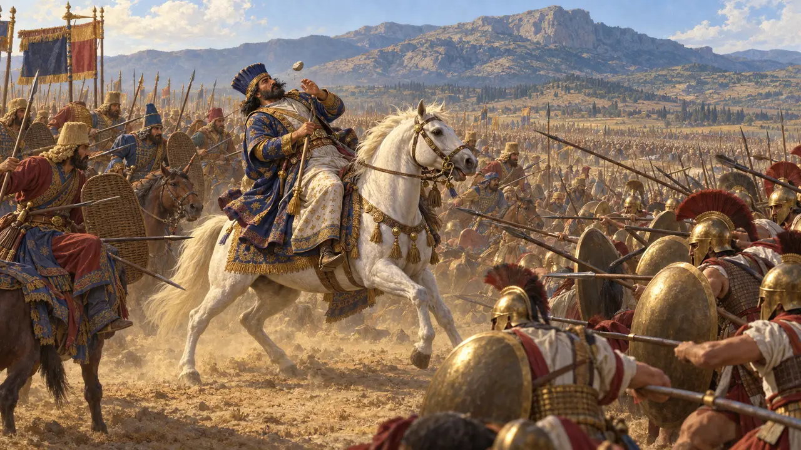
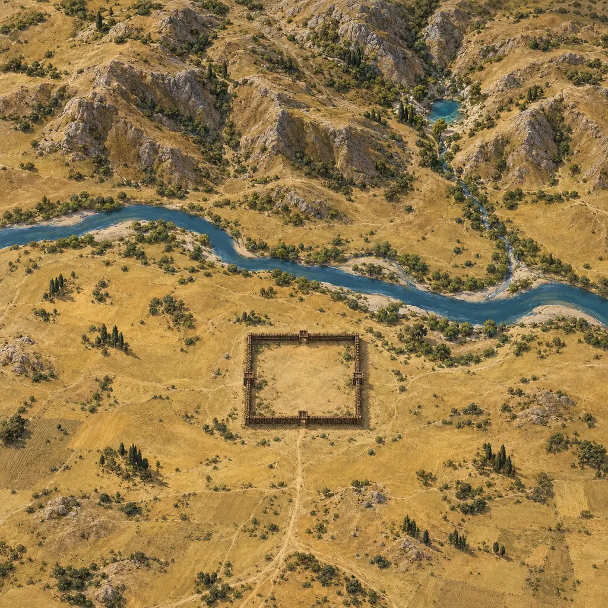
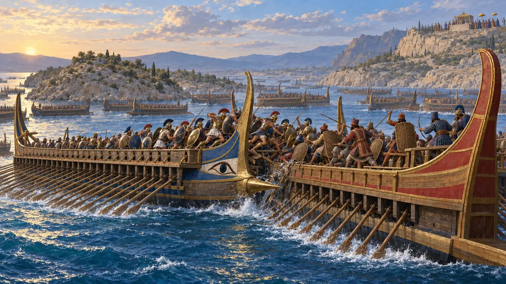
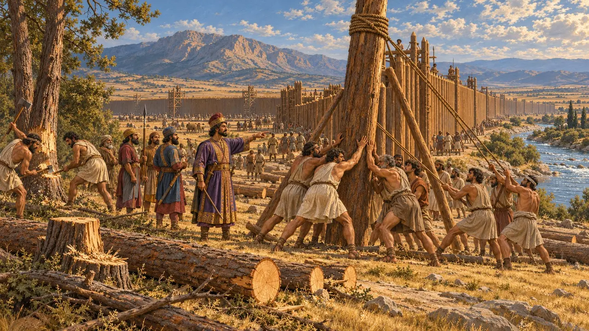
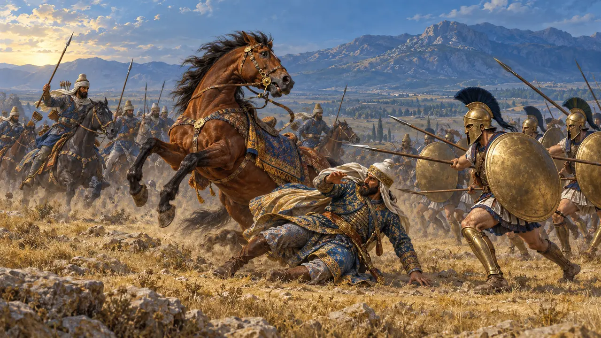
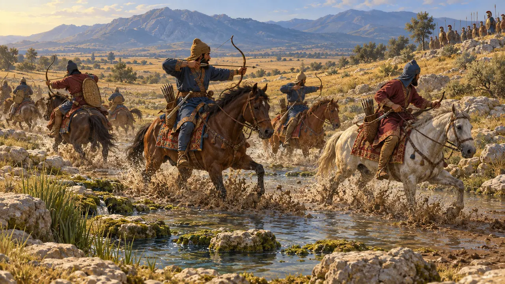
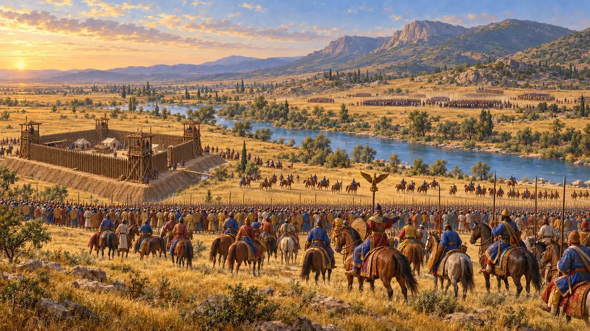
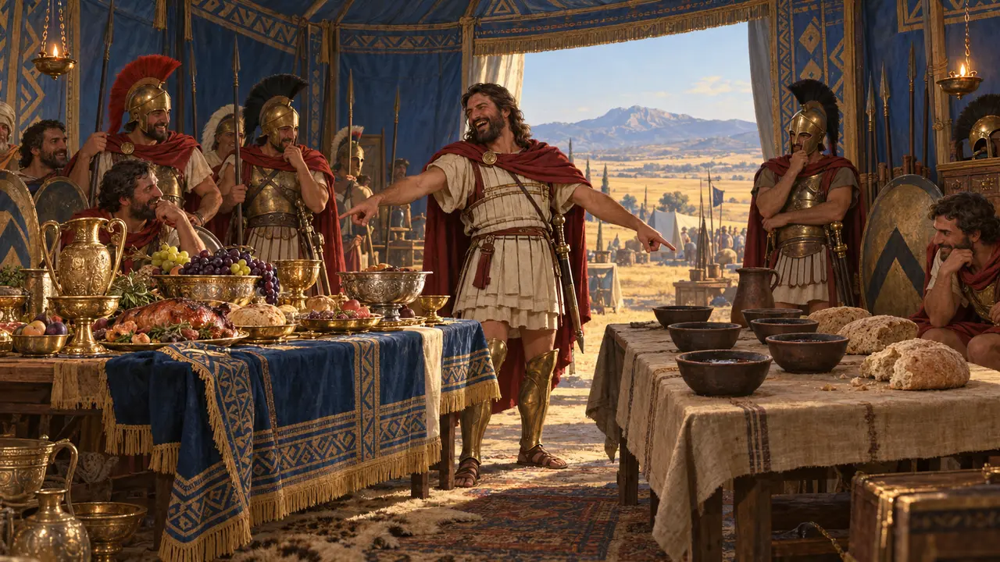
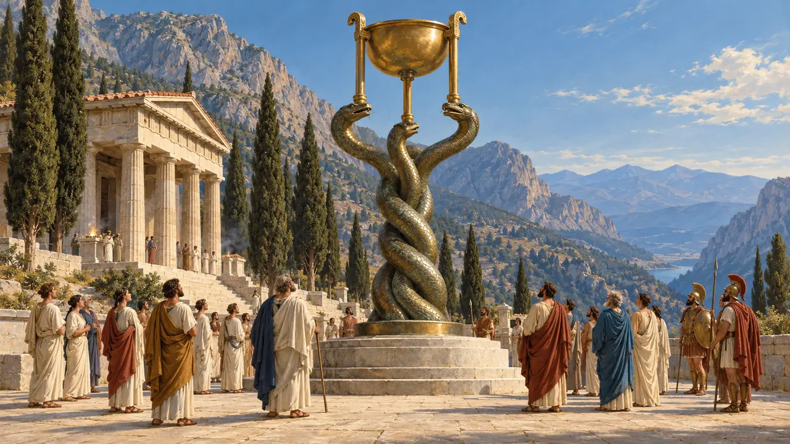

Nível 11: O Final · Plateia · 480–479 AEC
O Final
Mardônio cai em Plateia, verão de 479 AEC.
Enciclopédia › A História
Em Salamina, em setembro de 480 AEC, a frota grega derrotou a do Rei no estreito. Xerxes voltou para casa e deixou Mardônio com um exército de elite. No verão de 479 AEC, Mardônio enfrentou os gregos unidos sob Pausânias de Esparta ao pé do monte Citerão, e ali morreu.

- 480 AEC Salamina
- 480 AEC Xerxes volta para casa
- 479 AEC Atenas outra vez
- 479 AEC Masístio é morto
- 479 AEC Plateia e Mícale

Salamina
Relato antigoTemístocles atraiu a frota do Rei para o estreito apertado, onde seu número pouco valia. Xerxes assistia de um trono na praia. Ésquilo, que segundo se diz lutou ali, encenou 'Os Persas' oito anos depois, a única tragédia grega sobre um acontecimento de seu próprio tempo que chegou até nós.
Herodotus 8.40-96; Aeschylus, The Persians

A oferta de Mardônio
Relato antigoAlexandre da Macedônia levou a Atenas a oferta do Rei: liberdade, suas terras de volta e ainda mais, e seus templos reconstruídos. Os atenienses responderam que jamais fariam a paz enquanto o sol seguisse seu curso.
Herodotus 8.136-144

O forte no Asopo
Relato antigoMardônio construiu um forte quadrado de madeira, com cerca de dez estádios de lado, junto ao Asopo, nas terras de Tebas, que tomara o partido da Pérsia. Um nobre tebano ofereceu um banquete aos oficiais persas em Tebas antes da batalha.
No jogo: O forte é a grande obra da fase, e as caravanas tebanas trazem sua madeira.
Herodotus 9.15-16

Masístio
Relato antigoMasístio comandava a cavalaria persa vestindo uma couraça de escamas de ouro sob uma túnica púrpura. Quando seu cavalo foi atingido por uma flecha, os gregos o mataram golpeando-o no olho e levaram seu corpo ao longo das linhas para que todos o vissem.
No jogo: Plataea's decree asks for a cavalry stable, and the top bar remembers his fight at Erythrae: he leads the King's horse, and when he falls his riders pull back.
Herodotus 9.20-25

Gargáfia
Relato antigoOs cavaleiros persas conspurcaram a fonte de Gargáfia, que abastecia o exército grego, e os gregos tiveram de se deslocar durante a noite.
No jogo: Os cavaleiros do Rei que estiverem perto de um acampamento grego ao fim do dia conspurcam sua água.
Herodotus 9.49-51
A batalha
Relato antigoA marcha noturna dos gregos deu errado, e Mardônio atacou os espartanos e os tegeatas. Os persas lutaram com bravura, diz Heródoto, mas sem armadura, contra homens protegidos por armaduras. Mardônio foi morto por um espartano chamado Arimnesto, e o forte foi tomado de assalto.
No jogo: Mardônio cavalga com os persas no campo de batalha; quando ele cai, os que o cercam fogem para o acampamento.
Herodotus 9.59-70

Artabazo
Relato antigoArtabazo, filho de Farnaces, comandava cerca de quarenta mil homens e havia se oposto a travar batalha. Quando ela veio, conteve sua divisão e, ao ver os persas em fuga, retirou-a do campo, rumo ao norte pela Fócida e de volta para casa pelo Helesponto.
No jogo: No campo de batalha, sua divisão se mantém afastada e se retira quando Mardônio cai.
Herodotus 9.41-42, 9.66, 9.89

Duas refeições
Relato antigoNa tenda de Mardônio, Pausânias mandou seus cozinheiros servirem um banquete persa ao lado de uma refeição espartana e riu da insensatez de um homem que vivia daquele modo e viera roubar dos gregos seu pobre sustento.
Herodotus 9.80-82

A Coluna das Serpentes
Nos registrosOs gregos ofereceram a Apolo, em Delfos, uma trípode de ouro sobre uma coluna de bronze formada por três serpentes entrelaçadas, com os nomes das cidades que lutaram. Constantino a levou para sua nova capital. Ela ainda está de pé em Istambul, e os nomes ainda podem ser lidos.
Herodotus 9.81; Thucydides 1.132; the column in Istanbul's Hippodrome
Read next: the topics of O Final
Batalhas e eventos
A batalha de Salamina · O retorno de Xerxes à Ásia · A embaixada de Alexandre da Macedônia a Atenas · A tomada de Atenas por Mardônio · A morte de Masístio · A batalha de Plateia · A batalha de Mícale · O cerco de Sestos
Edifícios
Soldados e navios
Lanceiro Bactriano · Arqueiro Indiano · Hoplitas gregos · Arqueiros gregos e tropas ligeiras
Povo
Mardônio · Xerxes · Alexandre da Macedônia · Masístio · Artabazo · Pausânias · Temístocles · Artaíctes
Povos
Os Persas · Os Macedônios · Os Tessálios · Os Tebanos · Os Atenienses · Os Espartanos · Os Plateenses · A Liga Helênica · Os Fócios · Os tegeatas · Os sâmios · Os lócrios · Os beócios · Os coríntios · Os megarenses · Os málios
Lugares
O Helesponto · Atenas · Salamina · Plateia · Delfos · Tebas (Beócia) · A fonte de Gargáfia
Fauna e clima
Cervos · O javali · A cegonha-branca · A lebre · A raposa · O lobo · Patos selvagens · O milhafre · O abutre-fouveiro · O pombo-das-rochas · A gralha-de-nuca-cinzenta · O grou · A andorinha · Morcegos · A coruja-do-mato · A gralha-cinzenta · Neblina matinal